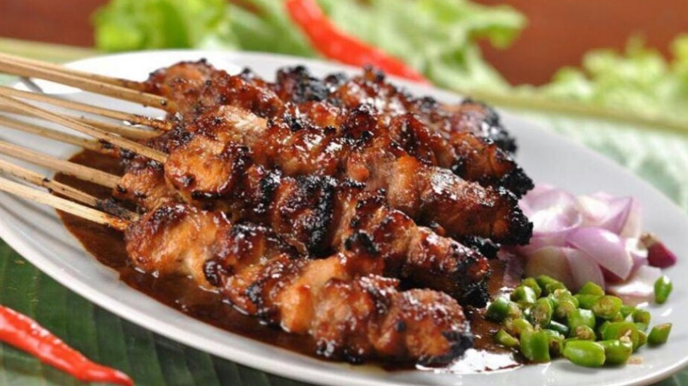

Nasi goreng adalah makanan khas Indonesia yang terbuat dari nasi yang digoreng dengan bumbu dan bahan lainnya, seperti sayuran, daging, atau seafood. Biasanya disajikan dengan telur mata sapi dan kerupuk sebagai pelengkapnya. Nasi goreng sangat populer di Indonesia dan telah menjadi makanan yang dikenal di seluruh dunia sebagai hidangan yang lezat, mudah disajikan, dan murah meriah.
Fettucini Carbonara
Masakan Barat
IDR 60K
Fettucini Carbonara adalah hidangan pasta Italia yang terdiri dari fettucini yang disajikan dengan saus creamy berbahan dasar telur, keju parmesan, dan bacon atau pancetta. Saus carbonara yang lezat dan gurih menggugah selera dan biasanya dihiasi dengan parsley dan lada hitam. Fettucini Carbonara adalah hidangan yang nikmat dan populer di seluruh dunia.
Bakso
Masakan Indonesia
IDR 15K
Bakso adalah makanan khas Indonesia yang terdiri dari bola daging yang terbuat dari campuran daging sapi atau ayam yang dicincang halus, tepung sagu, dan bumbu-bumbu rempah. Bakso biasanya disajikan dalam kuah kaldu daging yang gurih, dengan mie, tahu, dan sayuran sebagai pelengkapnya. Bakso adalah hidangan yang populer di Indonesia dan dijual di banyak tempat, dari kaki lima hingga restoran.
Ramen
Masakan Kontinental
IDR 40K
Ramen adalah hidangan mie populer dari Jepang yang terdiri dari mie yang panjang dan kenyal, disajikan dalam kuah kaldu yang kaya rasa, yang biasanya terbuat dari tulang babi, ikan, atau ayam. Ramen biasanya dihiasi dengan potongan daging, telur rebus, jamur, bawang putih, dan bawang bombay. Ramen memiliki berbagai varian rasa yang berbeda dan sangat populer di seluruh dunia.

Sate
Masakan Indonesia
IDR 20K
Sate adalah makanan khas Indonesia yang terdiri dari potongan daging (biasanya sapi, ayam, atau kambing) yang ditusuk pada tusuk sate dan dibakar di atas arang atau gril. Sate biasanya disajikan dengan bumbu kacang atau kecap manis, irisan bawang merah, dan nasi atau lontong sebagai pelengkapnya. Sate adalah hidangan yang populer di Indonesia dan sering ditemukan di kaki lima hingga restoran.
Ice Cream
Dessert
IDR 100K
Ice cream adalah makanan penutup yang terbuat dari campuran susu, gula, dan bahan-bahan lain seperti buah-buahan atau cokelat yang dicampur dan diaduk bersama untuk menciptakan tekstur yang lembut dan krimi. Ice cream biasanya disajikan dalam berbagai rasa dan dihidangkan dalam cone atau cup sebagai wadahnya. Ice cream sangat populer di seluruh dunia sebagai makanan penutup yang menyegarkan dan enak.
Tentang Warung Tugas Pweb
Warung Tugas Pweb adalah sebuah restoran yang menyajikan berbagai macam masakan dari Imajinasi pribadi saya. Restoran ini didirikan pada tahun 2023 oleh saya sebagai peserta matkul Pweb yang memiliki impian untuk mempromosikan kelezatan masakan imajinasi ke seluruh dunia. Saat ini, Warung Pweb tidak melayani pembelian masakan apapun karena kami hanya melayani kunjungan virtual.
Kami mempromosikan masakan berkualitas dengan bahan-bahan segar dan terbaik. Semua menu yang kami promosikan diolah oleh imajinasi saya yang mencoba berpengalaman di bidang kuliner. Kami juga menawarkan suasana virtual yang nyaman dan ramah, sehingga pelanggan kami dapat menikmati makanan mereka dengan tenang dan santai.